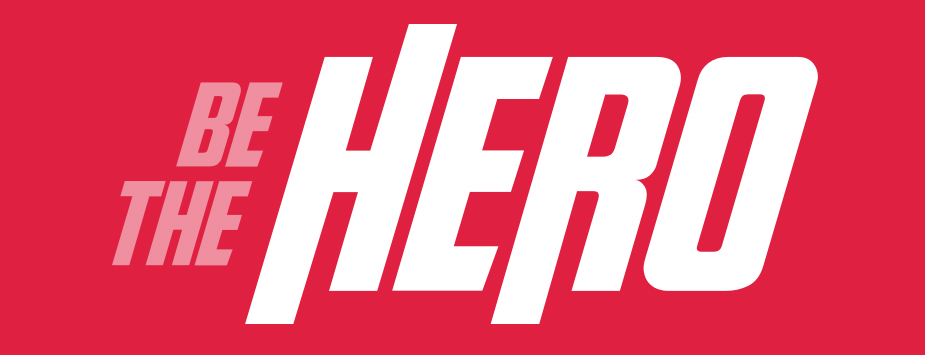

Be The Hero
Projeto desenvolvido durante a Semana OmniStack 11 - ROCKETSEAT, com objetivo de construir do zero uma aplicação com backend, frontend e mobile, adotando as principais tecnologias do mercado tais como Node e React.
Objetivo do projeto: Construir uma aplicação que possa ser utilizada por uma ONG, permitindo o seu cadastro e listagem de casos que precisa de ajuda. O aplicativo conta com abas onde o usuário poderá entrar diretamente em contato com uma determinada ONG seja por e-mail, seja pelo Whatsapp, tudo de forma integrada com o aplicativo desenvolvido.